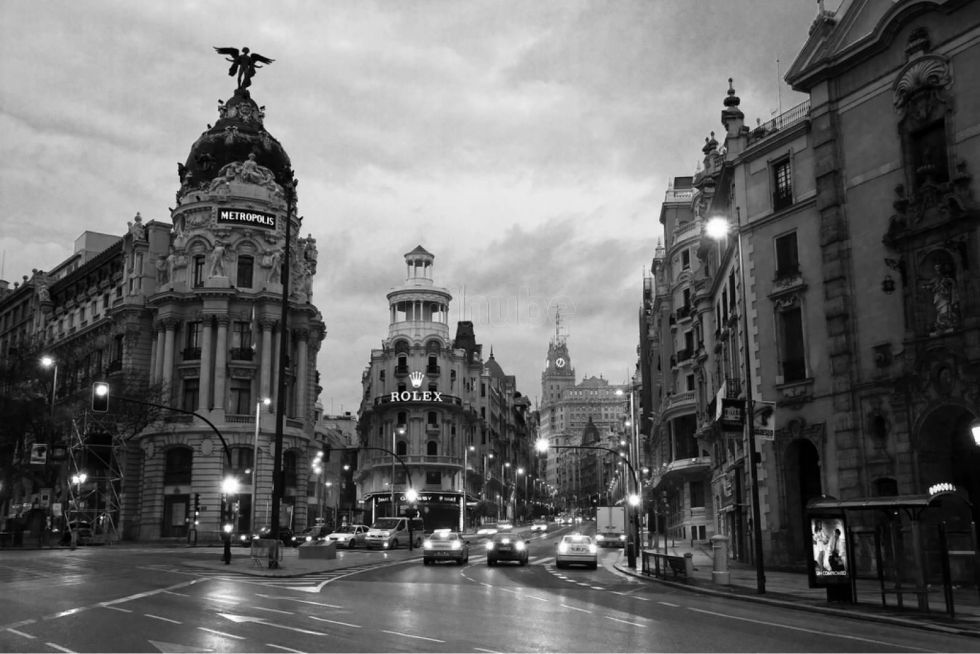

PaulaPhotography
PaulaPhotography
PAULA PHOTOGRAPHY

"La fotografía es la única forma de detener el tiempo."
- Douglas Kirkland
Fotos Destacadas
"Una fotografía es un secreto sobre un secreto. Cuanto más te dice, menos sabes."
- Diane Arbus
Inspiración
- Sebastião Salgado: Explora la intersección entre la humanidad y la naturaleza en sus impactantes imágenes documentales.
- Annie Leibovitz: Maestra en retratos de celebridades, captura la esencia de sus sujetos con creatividad y estilo único.
- Lange: Sus fotografías documentales durante la Gran Depresión han dejado una huella imborrable en la historia visual.
"La fotografía es el único lenguaje que puede ser entendido y comprendido en todo el mundo."
- Bruno Barbey
Noticias fotografía
Descubre las últimas noticias y tendencias en el mundo de la fotografía en Xataka Foto.